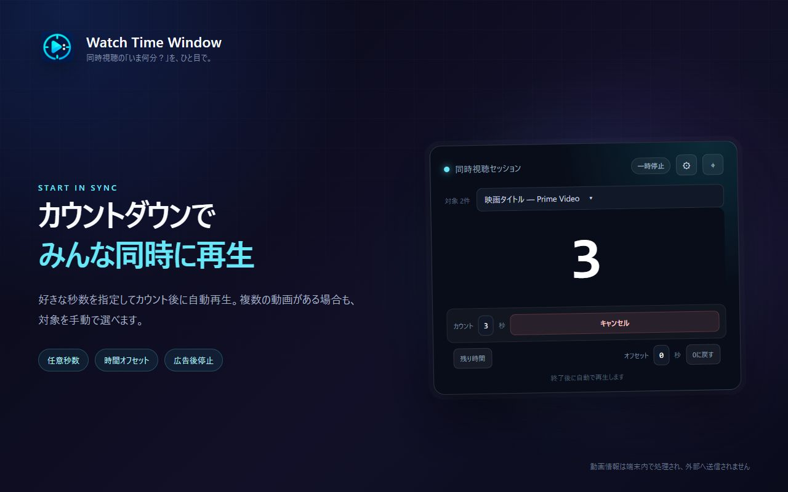
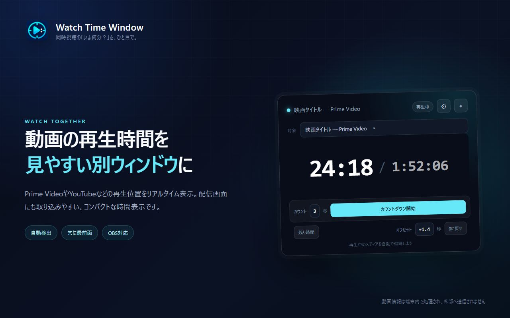
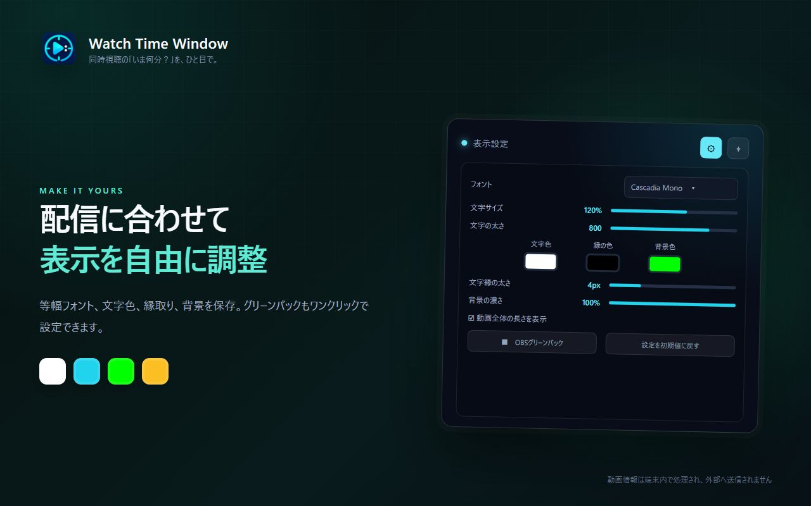

01 / COUNTDOWNカウントダウンのあと、
カウントダウンのあと、
そのまま再生。
秒数を自由に決めて、再開の合図をわかりやすく。カウントダウンが終わると対象の動画を自動再生します。キャンセルしたときは再生しません。
視聴者側の動画を操作・同期する機能ではありません。視聴者には合図に合わせて再生してもらいます。

CHROME EXTENSION / 同時視聴・配信向け
動画の再生時間を、見やすい別ウィンドウに。
好きな秒数でカウントダウンして、ゼロになったら自動再生。同時視聴のスタートや、途中からの再開を手助けします。
秒数を自由に決めて、再開の合図をわかりやすく。カウントダウンが終わると対象の動画を自動再生します。キャンセルしたときは再生しません。
視聴者側の動画を操作・同期する機能ではありません。視聴者には合図に合わせて再生してもらいます。

再生位置と動画全体の長さを、移動・サイズ変更できる独立ウィンドウに表示。動画が1つなら自動選択、複数あるときは対象を手動で切り替えられます。
経過時間・残り時間の切り替えや、一時的な表示オフセットにも対応します。

等幅フォント、文字色、背景、文字縁の色と太さをカスタマイズ。OBS向けグリーンバックもワンクリックで設定できます。
見た目とカウントダウン秒数は保存されるので、次回もいつもの設定で使えます。

対応サービスの広告終了を検出して一時停止。みんなで再開するための準備に使えます。
ページ上のHTML5動画・音声の時間を表示します。映像を録画・再配信する機能ではありません。
拡張機能が扱う動画情報やタブ情報を、開発者や第三者のサーバーへ送信しません。
GET STARTED
Amazon Prime Video、YouTube、NetflixなどのHTML5プレイヤーを想定しています。検出・再生操作・広告判定の対応状況は、サービスの仕様やプレイヤー構成によって変わります。配信前に対象の動画で動作を確認してください。